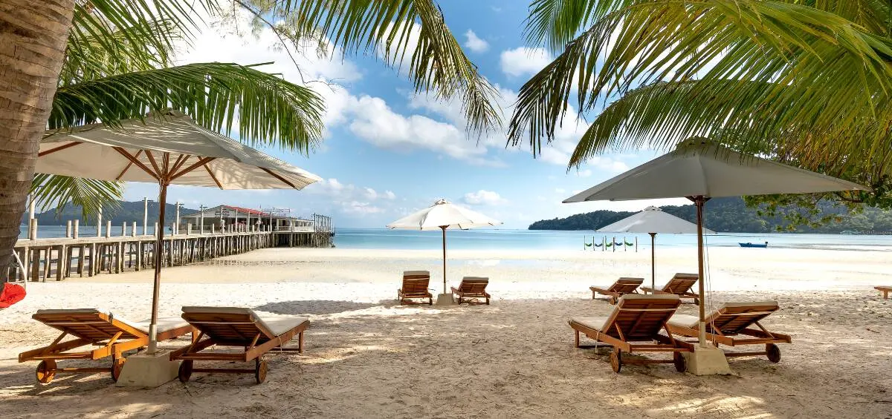
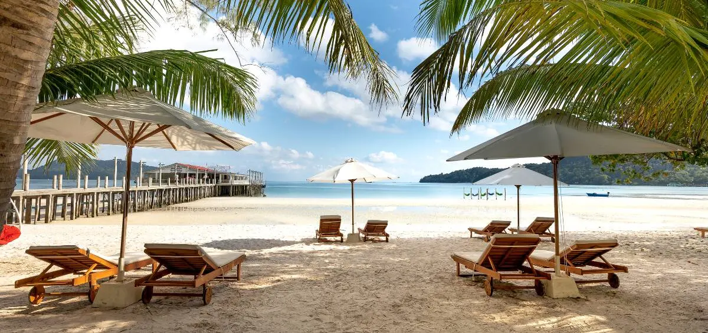

🌴 Summer Travel
Summer is the most popular season for travel as people take vacations to relax and explore new places. Beach destinations, hill stations, and countryside trips are especially loved during summer. Traveling in summer allows people to enjoy long days, outdoor sightseeing, and local festivals. Popular summer travel activities include swimming, trekking, sunset watching, and photography. A well-planned summer trip creates unforgettable memories and helps people escape daily routines.Summer travel gives people the opportunity to explore nature and relax from busy schedules. Many travelers prefer visiting beaches to enjoy sea breezes, sunsets, and water sports. Hill stations are also popular summer destinations because of their cool climate and scenic beauty. Traveling in summer allows families and friends to spend quality time together and create memorable experiences. Planning is very important for summer travel. Travelers often choose lightweight clothing, stay hydrated, and plan activities during early mornings or evenings to avoid extreme heat. Summer travel also introduces people to different cultures, cuisines, and traditions, making the journey both educational and enjoyable.
By Anuhya Pinapati
Date:2-5-2026